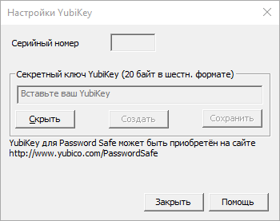

При выборе данного пункта будет отображён диалог, с помощью которого можно просматривать и редактировать настройки Password Safe. Для получения информации о настройках на той или иной вкладке перейдите по соответствующей ссылке.
Позволяет управлять политикой паролей по умолчанию и именованными политиками паролей. Вы можете создать до 255 именованных политик. Длина имени политики не должна превышать 255 символов.
Настроить основную панель инструментов
Выбор и перестановка команд, отображаемых на панели инструментов.
Создать пароль
Создание пароля согласно выбранной политики и копирование его в буфер обмена. Пароль из буфера обмена может быть использован в других приложениях. Для создания пароля вы можете выбрать политику по умолчанию, именованную политику, или явно задать требуемые параметры.
YubiKey
Здесь вы можете настроить ключ YubiKey для доступа к контейнеру Password Safe, или создать его резервную копию, на случае повреждения или утери.

Для настройки YubiKey
Подключите YubiKey к USB-порту ПК.
Выберите пункт меню «Сервис→YubiKey...». Будет отображён диалог настройки YubiKey.
В нём вы должны увидеть серийный номер вашего устройства. Если поле пустое, убедитесь что устройство правильно подключено.
Нажмите кнопку «Создать». Будет сгенерирована 20-байтная случайная последовательность, которая затем будет записана в YubiKey и использована при доступе к контейнеру.
Нажмите кнопку «Сохранить». При выполнении этого действия созданный ключ будет записан в YubiKey, а его зашифрованная копия в контейнер Password Safe (чтобы его затем можно было использовать при создании резервной копии).
При успешном завершения окно будет закрыто. В противном случае, будет отображено сообщение об ошибке.
Для выхода из диалога настроек нажмите кнопку «Закрыть».
Примечание. Чтобы использовать YubiKey для аутентификации, после проведения настройки необходимо сменить мастер-пароль контейнера. Порядок изменения мастер-пароля описан описан в разделе Изменение мастер-пароля для контейнера.
Создание резервной копии YubiKey
Подключите запасной YubiKey к USB-порту ПК.
Выберите пункт меню «Сервис→YubiKey...». Будет отображён диалог настройки YubiKey.
В нём вы должны увидеть серийный номер вашего резервного устройства. Если поле пустое, убедитесь что устройство правильно подключено.
Не нажимайте на кнопку «Создать». Последовательность, отображённая в поле «Секретный ключ YubiKey» это ключ, связанный с контейнером. Этот ключ будет записан на резервный YubiKey.
Нажмите кнопку «Сохранить». Произойдёт сохранение ключа на резервное устройство.
При успешном завершения окно будет закрыто. В противном случае, будет отображено сообщение об ошибке.
Для выхода из диалога настроек нажмите кнопку «Закрыть».
Изменить язык
Если у вас установлены дополнительные языковые модули (устанавливаются по умолчанию), с помощью этого меню можно переключать язык программы на лету.
После изменения языка все меню, диалоги и сообщения будут отображаться на выбранном языке.